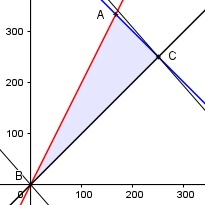

Aufgabe 76 Während eines Basars soll Kaffee und Tee angeboten werden. Der Becher Kaffee kostet in der Herstellung 0,3 €, Tee 0,2 €. Beide sollen pro Becher für 1 € angeboten werden. Es wird mit einem Verkauf von insgesamt maximal 500 Bechern gerechnet. Die Veranstalter gehen davon aus, dass mindestens so viel Kaffee wie Tee, aber maximal doppelt so viel getrunken wird. Mit welchem maximalen Gewinn ist zu rechnen? x = Anzahl Becher Tee y = Anzahl Becher Kaffee x > 0 x ∈ ℕ y > 0 y ∈ ℕ x + y ≤ 500 y ≥ x und y ≤ 2x Gewinn pro Becher Kaffee = 1 € - 0,3 € = 0,7 € Gewinn pro Becher Tee = 1 € - 0,2 € = 0,8 € Zielfunktion: G = 0,7 * y + 0,8 * x Randgerade 1: x + y = 500 Randgerade 2: y = x Randgerade 3: y = 2x

Die Eckpunkte A, B und C bilden das Planungs- gebiet, das alle Ungleichungen erfüllt. A ist der Schnittpunkt der Randgeraden 1 und 3 y = 2x x + y = 500 Eingesetzt: x + 2x = 500 3x = 500 |:3 500 x = ----- 3 500 1000 y = 2 * ----- = ------ 3 3 500 1000 A(-----|------) ∉ ℕ 3 3 C ist der Schnittpunkt der Randgeraden 1 und 2 y = x x + y = 500 Eingesetzt: x + x = 500 2x = 500 |:2 x = 250 Eingesetzt: 250 + y = 500 |-250 y = 250 C(250|250) Gmax = 0,7 * 250 + 0,8 * 250 = 375 € anschaulich: Die Parallele der Zielfunktion 0,7y + 0,8x = 0 liegt in C höher als in A.